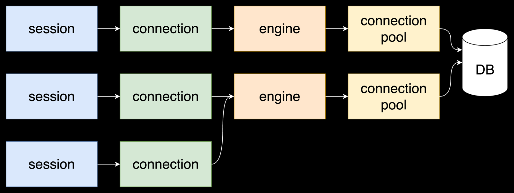

The problem that the library solves
Sqlalchemy has an engine that is responsible for the connection pool. The engine must be alive all the time the application is running in order to quickly issue ready connections to the application when it needs it.
We use sessions in the application. The session receives one connection from the pool. The session should live a short time, at most for the processing time of one request, and often even less.

Let's see what existing solutions are available to manage engine and session:
Manual solution
This is how the code is duplicated and that two connections and two transactions are used. And often in this case, one connection and one transaction were needed:
@app.post("/users/")
async def create_user(name):
await insert_user(name)
await insert_user_profile(name)
async def insert_user(name):
async with get_async_session() as session:
async with session.begin():
await session.execute(stmt)
async def insert_user_profile(name):
async with get_async_session() as session:
async with session.begin():
await session.execute(stmt)
You can move the duplicate code to a higher level, and then you get one connection and a transaction:
@app.post("/users/")
async def create_user(name:):
async with get_async_session() as session:
async with session.begin():
await insert_user(name, session)
await insert_user_profile(name, session)
async def insert_user(name, session):
await session.execute(stmt)
async def insert_user_profile(name, session):
await session.execute(stmt)
But if you look at it globally, the code duplication doesn't go away. You need to do this in every handler:
@app.post("/dogs/")
async def create_dog(name):
async with get_async_session() as session:
async with session.begin():
...
@app.post("/cats")
async def create_cat(name):
async with get_async_session() as session:
async with session.begin():
...
You also have to set up everything yourself. No ready-made integration solutions are used. On the one hand, freedom, on the other hand, a lot of code.
Dependency
You can use dependency. For example, in fatsapi it looks like this:
async def get_atomic_session():
async with session_maker() as session:
async with session.begin():
yield session
@app.post("/dogs/")
async def create_dog(name, session=Depends(get_atomic_session)):
...
@app.post("/cats/")
async def create_cat(name, session=Depends(get_atomic_session)):
...
There are 2 problems here:
- You cannot close the session and transaction prematurely, because the dependency is responsible for this
- The session will have to be rolled from the very top of the stack down to the point where it is really needed
By the way, there is no ready-made solution for integration into the framework here. Write the dependency itself yourself
Wrappers over sqlalachemy
There are various wrappers that often have more convenient integration
Litestar, for example, has the advantages and disadvantages of dependency:
config = SQLAlchemyAsyncConfig(
connection_string=URL
)
sqlalchemy_plugin = SQLAlchemyInitPlugin(config)
class UserRepository(SQLAlchemyAsyncRepository[User]):
model_type = User
@post("/users")
async def create_user(data: User, repo: UserRepository):
await repo.add(data) # <- insert into User
here is an example of ormar:
class BaseMeta(ormar.ModelMeta):
...
class User(ormar.Model):
...
@app.post("/users/")
async def create_user(name):
await User.objects.create(name=name)
The main problem with wrappers is that it's new knowledge that the developer needs to know. This is a new syntax. If a developer knows sqlalchemy they don't necessarily know the wrapper.
Wrappers are also often conveniently designed with simple CRUD scripts, but complex SQL queries are very difficult to write.
Solution
And the library solves all this:
- Very convenient integration with web frameworks
- Automatic engine, session and transaction lifecycle management
- You can close the session manually without waiting for automation
- Getting a session out of context only where it is needed